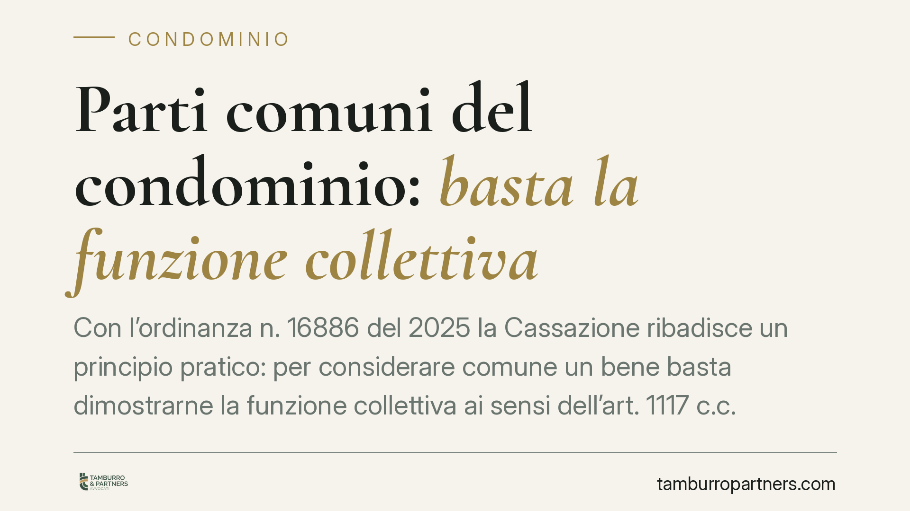

Parti comuni del condominio: basta la funzione collettiva
Con l'ordinanza n. 16886 del 2025 la Cassazione ribadisce un principio pratico: per considerare comune un bene basta dimostrarne la funzione collettiva ai sensi dell'art. 1117 c.c. L'onere di provare la proprietà esclusiva ricade invece sul singolo condomino che la rivendica. Una regola che incide direttamente sulle liti tra condomini e sulle scelte dell'amministratore.

Il caso e il principio
La Seconda Sezione civile della Cassazione, con l'ordinanza n. 16886 del 24 giugno 2025, torna su un tema ricorrente: come si stabilisce se un bene appartiene a tutti i condomini oppure a uno solo.
La Corte adotta una lettura funzionale dell'art. 1117 del Codice civile. Non serve ricostruire l'intera catena degli atti di acquisto per affermare che un bene è comune: è sufficiente dimostrare che il bene, per sua destinazione oggettiva, serve al godimento o all'uso collettivo dell'edificio. Pensiamo al suolo su cui sorge il fabbricato, alle fondazioni, ai muri maestri, alle scale, agli androni.
Chi sostiene il contrario, cioè il singolo che afferma di esserne proprietario esclusivo, deve fornire la prova documentale di quella titolarità. L'onere, in altre parole, si sposta su chi vuole sottrarre il bene alla presunzione di comunione.
Inquadramento normativo
L'art. 1117 c.c. elenca le parti dell'edificio che si presumono comuni "se non risulta il contrario dal titolo". La formula è decisiva: la comunione è la regola, la proprietà esclusiva l'eccezione.
Il "titolo" rilevante è l'atto di acquisto o il regolamento di natura contrattuale (cioè accettato da tutti i condomini) che attribuisca espressamente il bene a un singolo. Non bastano comportamenti di fatto, tolleranze o un uso prolungato: serve un documento che superi la presunzione legale.
La pronuncia si inserisce in un orientamento consolidato. La presunzione di comunione opera quando ricorre il presupposto oggettivo della destinazione funzionale del bene al servizio comune. Accertato quel presupposto, è il rivendicante a dover provare l'eccezione.
Cosa cambia in concreto
Per il condominio e per l'amministratore la decisione alleggerisce la posizione processuale. In una controversia sulla natura di un bene, il condominio non deve ricostruire l'origine storica della proprietà: gli basta dimostrare la funzione collettiva dell'area o del manufatto contestato.
Per il singolo condomino che intende far valere una proprietà esclusiva, invece, la posizione si fa più onerosa. Dichiarazioni, mappe catastali generiche o un uso esclusivo protratto nel tempo, da soli, non bastano. Occorre un titolo che attribuisca in modo chiaro il bene.
Il punto tocca liti molto frequenti: il cortile usato come parcheggio da un solo proprietario, il sottotetto accorpato di fatto all'appartamento dell'ultimo piano, il locale al piano terra adibito a deposito personale, porzioni di muro perimetrale occupate da canne fumarie o insegne.
Attenzione anche al profilo catastale: l'intestazione in catasto ha valore fiscale, non prova la proprietà. In giudizio non supera, da sola, la presunzione dell'art. 1117 c.c.
Cosa fare in concreto
- Recuperate i titoli originari. Chi rivendica la proprietà esclusiva deve procurarsi l'atto di acquisto, l'eventuale regolamento contrattuale e ogni documento che attribuisca espressamente il bene.
- Verificate la natura del regolamento. Controllate se il regolamento di condominio è di natura contrattuale (accettato da tutti) o solo assembleare: solo il primo può derogare alla comunione.
- Non confondete uso e proprietà. Documentate che l'uso esclusivo prolungato non equivale a titolo di proprietà, né lo costituisce automaticamente.
- Fate valutare la funzione del bene. Prima di avviare o resistere a una causa, consigliamo di far accertare la destinazione oggettiva del bene, anche con una verifica tecnica sullo stato dei luoghi.
- Agite per tempo. In caso di occupazione o modifica di parti comuni, sollecitate l'amministratore a intervenire e valutate gli strumenti a tutela del condominio prima che la situazione si consolidi.
La regola è semplice nella forma ma pesante nelle conseguenze: la comunione si presume, l'esclusiva si prova. Chi vuole mettere una parte dell'edificio al riparo dalla presunzione deve avere un titolo solido, non solo una prassi consolidata.
Disclaimer
Contributo informativo a cura di Tamburro & Partners - Avv. Giuseppe Tamburro. Non costituisce parere legale.
Ogni condominio ha una storia a sé.
Se gestisci un'amministrazione e vuoi un confronto su una specifica questione condominiale, scrivi allo studio. Ti rispondiamo entro un giorno lavorativo.